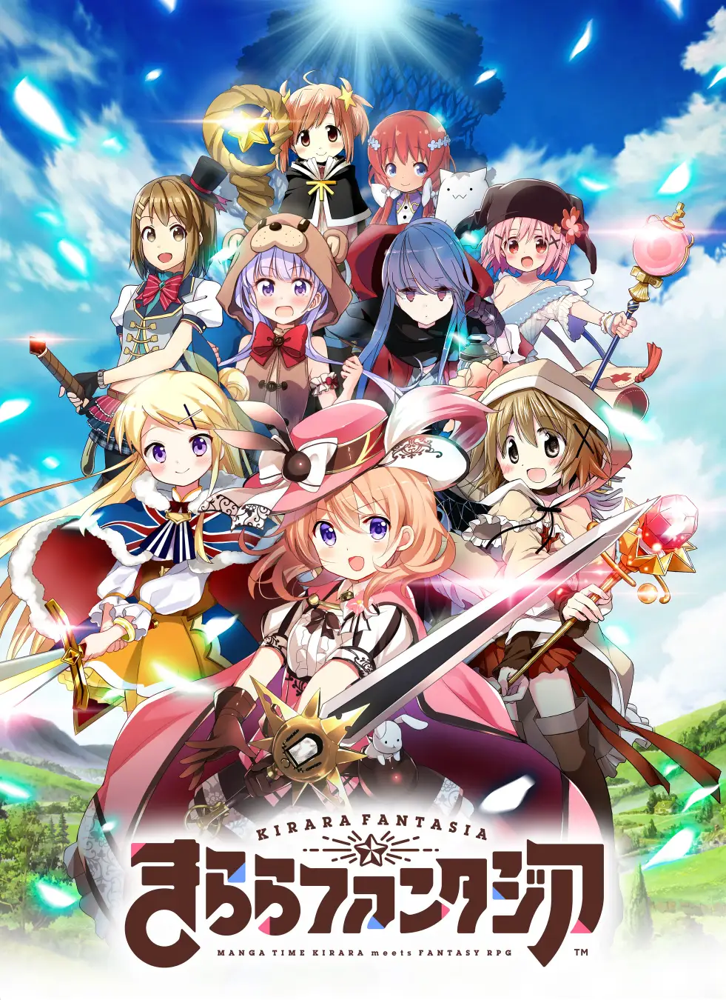

It's been quite a while since I last played a gacha game. The duration of that while depends on how long I consider that while to be, and if I consider attempts to get back into them to be breaking streaks regardless of how they went or only if they got me back in for more than like a week. But last week was exam week, and as I started thinking of what the hell to do once I got over exams I started thinking back again of Kirara Fantasia.
For the unexplained (which is gonna be most of you anyway), Kirara Fantasia is a Japan-only
(in theory) crossover gacha game with relatively simple (but maybe not straightforward) turn-based RPG
gameplay and characters from the Manga Time Kirara family of magazines, which (mostly) focuses
on cute-girls-doing-cute-things series.
I first got into it back in 2018 after randomly learning about it and reverse image searching
a image featuring the Yuru Camp girls in a thread about that series in /a/ back when it was still
airing, and at that point I literally just downloaded the game so I could save for the Yurucamp
cards (especially Nadeshiko since she was and still is my favorite from that series), and I did
end up getting her, but I pretty much lost that first account after that and following that I
started focusing on finishing Kirara shows I had not watched yet and only returned to the game
whenever I saw a card of a character I liked be announced then shortly thereafter leave and do
nothing but watch how things went.
Fast forward to somewhere around early 2021. I thought Kill me Baby was the hottest shit ever back then (PROTIP: it's not, still good tho), but right after that (if not next to it) in my Kirara show tier list was GA: Geijutsuka Art Design Class, and it had just gotten announced to appear in KiraFan. I eagerly waited for it to come out, but for some reason the very thought of downloading the game again and creating an account the day the characters for it (and Kuro of Shoulder-a-Coffin Kuro fame, by the same author) came out flew over my head and instead I just waited for enough months to pass until I was sure I could just start right off the bat with her instead of rerolling and forcing myself to submit to the RNGods if I didn't get her.
Which ended up making me finally pick up the game again and take it seriously on September 27th, 2019.
I'd have put an image of my account right when it just started if I had an image of it, and I'm too lazy to search for it, so I guess all you can do now is to mark my words for it.
I also don't even know why I picked that date. Her cards released on April or so, her weapon on
August (and I knew that). Maybe because I finally remembered to by then, I don't know.
But unlike in all my previous attempts to return to the game, where I just tried to get the
card of the girl I wanted and call it a day, I was serious.
Kisaragi was practically my waifu at the time, so I unabashedly said that my goals on the game
would be to evolve her, max her level and bond, get her weapon and evolve her weapon to the highest
possible level in the game in order to have a powerful Kisaragi and spent my time playing the game
clearing story quests, doing events and rolling for 4*s I use to get bond gems from just for that
purpose, which by the end of the year had mostly done, and by January 16th, 2020 my goal of getting
Kisaragi's weapon to Evo4 was finally done, all that was left was to level it up to the max, both
literally and skill-wise.
2020 was a shit year for me and for most of us too, but Kirara Fantasia and Kisaragi were two of
the only things things keeping my fragile emotional state at that time afloat. I spent at least
an hour on most days of that year think about KiraFan in some way or another, grinding for gems
I'd save for the eventual new 5* of the characters I actually liked (that is, the KMBs, the GA
girls and Kuro, although by the time Kuro got a limited I was already on my long break off the
game and ended up being too afraid to even pull for her...), and that pretty much made the
year.
I even ended up spending 50 bucks in the game in July just to get enough paid gems to be
able to afford a Select-your-5* ticket in order to get Kisaragi's awakening levels higher,
damn.
By October the entire Solar System aligned, the rangs bell, and it was time for Halloween
season, and to make me shit myself even more they announced limiteds for both KMB and GA
(Noda a qt). As soon as I heard the news I told my entire friend circle at the time that
I was going to roll for both and took my gem hoarding up to 11, focusing all the days
before the event on just earning as many gems as possible.
...And it paid off.
I woke up at 3am (spooky, i know) just to roll the two units I wanted the most, Sonya
and Noda(Miki), and had almost 35k gems on my bank, so I knew that I had a very high chance
to get both even if I preferred it to be in a few 10-rolls as possible.
My first few rolls weren't that good, but I ended up getting Sonya in 6 pulls (2300 gems),
which was pretty good, while getting Noda was slightly harder, but just as I was about to
insult all the "my wife chino", "sxarp", and other "overrated" Gochiusa fanboys I ended
uop getting Noda, which led me to my highest point in gacha history back then (>implying
there are actually emotional high points in experiences while playing mobages)
Following that, I proceeded to spend the following two months riding off the high of it,
then once the 3rd anniversary and Arc 2 happened we all discovered that GA and Kisaragi would
appear in Arc 2 of the Main Story, which became the new thing I hyped myself up to.
And then, one of my least favorite Kiraras got a limited before Kisaragi did...
This card, this card alone, was the reason why I ended up only rolling for Agiri (aka. Coke Ninja) and skipping the Kiyuduki-designed character, since I of course wouldn't want to have a card of one of my least favorite characters.
But you might be asking now: "Why are you so against that character? What do you NOT like about
her"?
Well, I think her hair (especially the color) is tacky and her "ojousama who's kind of tsundere
but actually poor!!!1!! personality isn't my kind of person. She seems fake to me and I react the way
I react towards similarly fake stuff. Also, both her 5*s are poopy meta-wise but KiraFan isn't exactly
a PvP game so it doesn't matter that much in the end.
But as I said, the existence of that very card lead me to forgo even rolling on a banner I really wanted to get the other card from due to risk, and was what, directly or indirectly started to make me get away from the game.
The first half of 2021 was a slow one when it came to Kirafan.
By then I was starting to move onto other stuff, but I still just kept trying to hoard gems
whenever I could, and it probably helped that I already had just enough units in my account that
I didn't have to worry about rolling for more of them since they mosly be dupes anyway.
Then GA Art Design Class Crea Craft got released, even if several monhs later than I expected,
and I spent as much time as I just could doing nothing but grinding it, with me reaching
somewhere around level 8 in no time, but it got grinded to a halt as I pretty much stopped playing
the game, which led me to pretty much speedrun it by the time I actually returned to the game.
By June, however, they announced the 3rd Arc 2 chapter, and I was also quick to notice that
it'd involve the GA girls. They showed a shadow that I acknowledged was Namiko as soon as
I saw it, and once the chapter was finally released, it became the second Main Story
chapter I actually read instead of skimming through it so I could get more gems (the
first one was Arc 2 Chapter 1, but that was because I wanted to know more about the
new lore and such)
And when it was time for me to get her, the RNGods were nice to me and decided to
make the algorithms bring her to me instead of seeing me languish since I had barely rolled
for months prior to that, especially non-ticket rolls.
At around that time (I think) the Ability Tree system got released, and I quickly went to unlock
Kisaragi's tree, but was also filtered by the sheer complexity of the system and the limited
amount of information on it back then, which led me to pretty much not do any work on it until
recently; but that didn't make me leave the game just yet.
If anything, the final nail in the common wasn't just not knowing how to work with the Skill Tree
system, nor was it being tired of waiting for anoher Kisaragi 5* and having almost 0 interest on
the year's Swimsuit units, but simply just getting more interested into other things, namely
PaRappa The Rapper.
As my interests shifted, so did my habit of playing KiraFan, and I also got even more narrowly focused on keeping my gems, with me not blowing my load of gems on Halloween Kuro despite having all the reasons in the world to do so due to sheer cowardice, and as 2022 started I pretty much also started to be out of the loop as well.
Until recently, that is.
The thing is, I had exams week in like the second week of this month, and as these days went by, I started thinking again of KiraFan. I wondered where the game was headed to these days, and I also felt like I was not only missing all the content I could have had or at least all the gems I could have hoarded, but also the people I managed to meet through a shared interest on it while I was at school. I ended up forgetting by the time I went back home, but the thoughts only got stronger, and by Friday the 13th of May, 2022 I decided to finally reinstall the game again. And much like back in September, I meant business, although this time it was just as much because of my love for Kisaragi coming back as it was because of everything I had to catch up on after months of near-total absence.
As of writing this post, it's May 18th, and it's been 5 days since I first reinstalled the game,
but it's also safe to say that I've come back to it with full force. Perhaps it is because of
renewed interest, perhaps it is because I really feel like I have to be catching up to the others,
but I've finally managed to max GA Crea, and now I've also started working on 5* Kisaragi's Skill
Tree, in order to keep maxing her just like what motivated me to keep playing back in 2019.
I also even installed Bluestacks in my Windows partition on my computer in order to create some
macros for grinding too predictable for me to do manually and that would of course never happen
on Auto mode, as well for when I want to play when my battery is too low, but my biggest complaint
about it has been, and will always be, the fact that it's not available on Linux.

Overall, my experience with Kirara Fantasia has been one of ups and downs. I wouldn't call this
game good, much less the pinnacle of mobile gaming (that goes to Subway Surfers),
but, as shown in this blog, it's a game that I have lots of feelings about, and a game that
I enjoyed playing quite a lot. It satisfies my craving for gacha games in a way literally no
other game like it has done, and that's what matters.
And what about my future plans? Well, I've told you that I save gems in that game like crazy,
and I have an interest on a certain character for a while already, so that's pretty much
what I've been saving for the future already. I'm inching closer and closer to 50k gems,
which would allow me to spark 4 times over, and to be honest hoarding gems is at this point
more fun (and far better) than actually spending money in the game, so that's what I do now.
I can only look forward to what comes out soon.